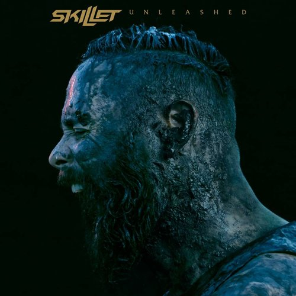

Unleashed ist das neunte Studioalbum der US-amerikanischen christlichen Rockband Skillet, das am 5. August 2016 veröffentlicht wurde. Das Album wurde am 20. Mai 2016 angekündigt und gleichzeitig ein Lyric-Video zum Track "Feel Invincible" auf dem YouTube-Kanal der Band veröffentlicht. Sechs Tage später veröffentlichte die Band auf ihrem YouTube-Kanal ein Lyric-Video zum Track "Stars". Das Album wurde am 4. Dezember 2018 von der RIAA mit Gold ausgezeichnet und verkaufte sich 500.000 Mal.
